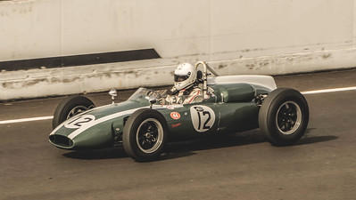
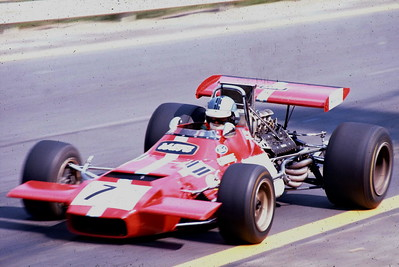
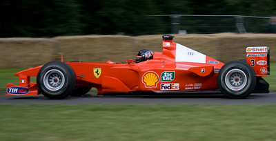

Origins Of F1
F1 originated with roots in the 1920's having roots in the Manufactures' Championship form 1925 to 1930 and the the European Drivers' Championship form 1931 to 1939 but, Formula 1 was officially introduced in 1946 with Farnia winning their first race of F1. Inatially known as Formula A, Formula I or Formula 1, there was an argument on where the first race would be but it was decided to have the race in Italy at Turin.
The Years of F1
| Year | Description |
|---|---|
| 1960 |  In the 1960, it was the 14th season of the Formula One motor racing, hosting about 10 races in an F1 season. In that decade, the amount of teams in the decade was 11 team with teams including Porsche as well at Masearati. A driver that shined in this time frame are Clark who was sadly cut of in his prime in 1968 |
| 1970 |  1970s, commonly known as the golden area of Formula 1, this decade was marked by a number of iconic brands and drivers that are still remembered to this day as some of the highlights of f1. |
| 1980 |
 Dominated the two household teams of McLaren and Williams, this was one of the most deadly decades, taking the lifes of
4 drivers. Alain Prost was the driver who was classed as the best drivers of 80s but, the rivalry of Ayrton Senna and Prost began
in this decade, spanning all the way to Senna's death.
Dominated the two household teams of McLaren and Williams, this was one of the most deadly decades, taking the lifes of
4 drivers. Alain Prost was the driver who was classed as the best drivers of 80s but, the rivalry of Ayrton Senna and Prost began
in this decade, spanning all the way to Senna's death.
|
| 1990 |
 The beginning of the 1990 began with the rivalry of Alain Prost vs Ayrton Senna which was won by Senna, the rivalry was
ties until Suzuka where after Prost was leading, Senna went too hard onto the turn, lost control of the car and crashed into
the barrier killing him ridding F1 of one of the most talented drivers they had.
The beginning of the 1990 began with the rivalry of Alain Prost vs Ayrton Senna which was won by Senna, the rivalry was
ties until Suzuka where after Prost was leading, Senna went too hard onto the turn, lost control of the car and crashed into
the barrier killing him ridding F1 of one of the most talented drivers they had.
|
| 2000 |  The 2000s showed one of the greatest driver of step foot in Formula 1, Michael Shumacher came into F1 with a bang, winning his first race just one year after his entry into f1, he peaked in this decade winning 4 of his seven Championship in this decade. This decade also debuted many of the famous F1 drivers that we know today like Sebastian Vettel, Jenson Button as well as Lewis Hamilton. |
| 2010 |
 This decade was one of the most exiting decades with the heated rivalry between RedBull and Mercedes
at the seat of the decade RedBull dominated the beginning of this timeline with the hands of Mark Webber and Sebastian Vettel but
coming to the end of the decade Mercedes was constantly on the top step allowing Lewis Hamilton and Nico Rosberg to gain their Championships.
This decade was one of the most exiting decades with the heated rivalry between RedBull and Mercedes
at the seat of the decade RedBull dominated the beginning of this timeline with the hands of Mark Webber and Sebastian Vettel but
coming to the end of the decade Mercedes was constantly on the top step allowing Lewis Hamilton and Nico Rosberg to gain their Championships.
|